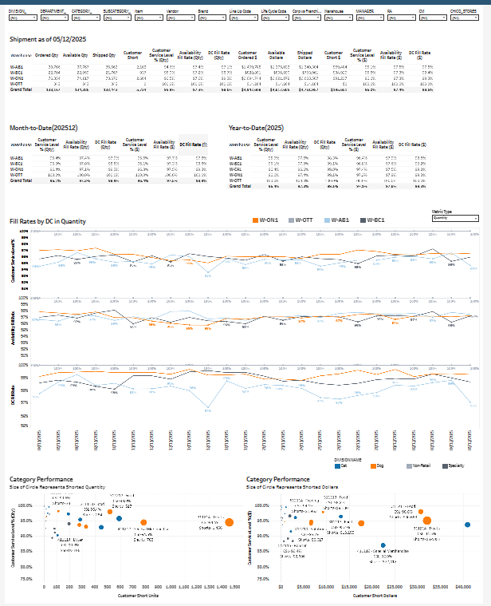

The Challenge
Managing inventory replenishment across hundreds of distribution centers and thousands of stores requires real-time visibility into stock levels, inbound orders, and customer service metrics. The existing ERP reports were too slow and lacked the granularity needed for proactive decision-making.
Key Business Questions
- What is our current Customer Service Level (CSL) across all DCs?
- How are Weeks of Supply (WOS) trending against targets?
- Which DCs have the highest shortage exposure?
- How does inventory evolve over fiscal periods?
The Solution
I built a comprehensive Replenishment Intelligence Suite that combines CSL performance with inventory evolution analytics:
📊 Executive KPIs
Real-time monitoring of 18.18M units ($88.86M) with key metrics: Inbound Orders $8.79M, Outbound Shipped $13.81M, Shorts $323.94K
📈 CSL Tracking
Customer Service Level trending at 96.79% with fiscal week drill-down showing performance variance across periods
🏭 DC Performance
Distribution center breakdown with WOS (Weeks of Supply) at 18.66 average, highlighting under/overstock situations
📦 Inventory Mix
Pie chart analysis of inventory distribution by DC with evolution trends over time
Dashboard Views


Technical Implementation
Data Architecture
Snowflake data warehouse with incremental ETL loading from ERP systems. Sub-minute latency for critical inventory movements.
Key Metrics
- Total Inventory Qty & $
- CSL (Customer Service Level)
- WOS (Weeks of Supply)
- Shorts $ & Units
Filter Dimensions
- Fiscal Year / Period / Week
- Vendor Code / Division
- Department / Category
- DC (Distribution Center)
Visualization
Time-series trending with dual-axis charts for CSL/WOS correlation. Donut chart for DC inventory distribution.
The Results
"This dashboard gave us proactive visibility into stock-outs before they impact customers. We've significantly reduced shrinkage and improved fill rates."